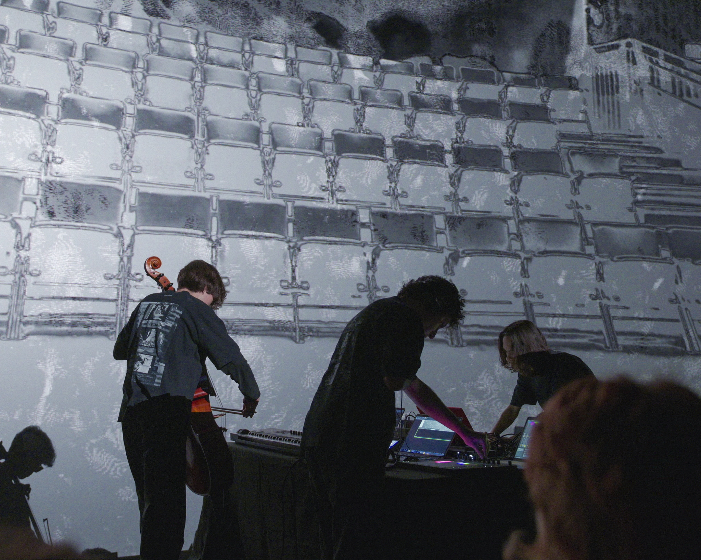
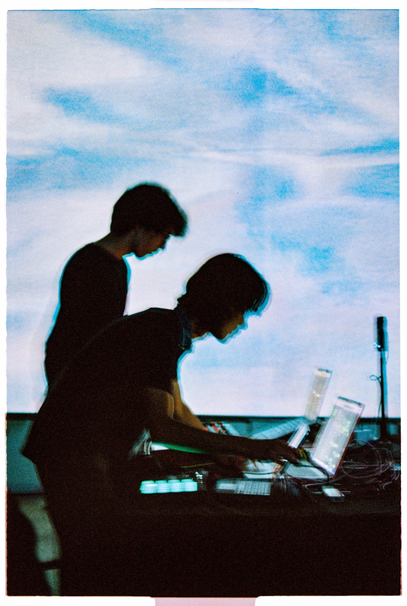
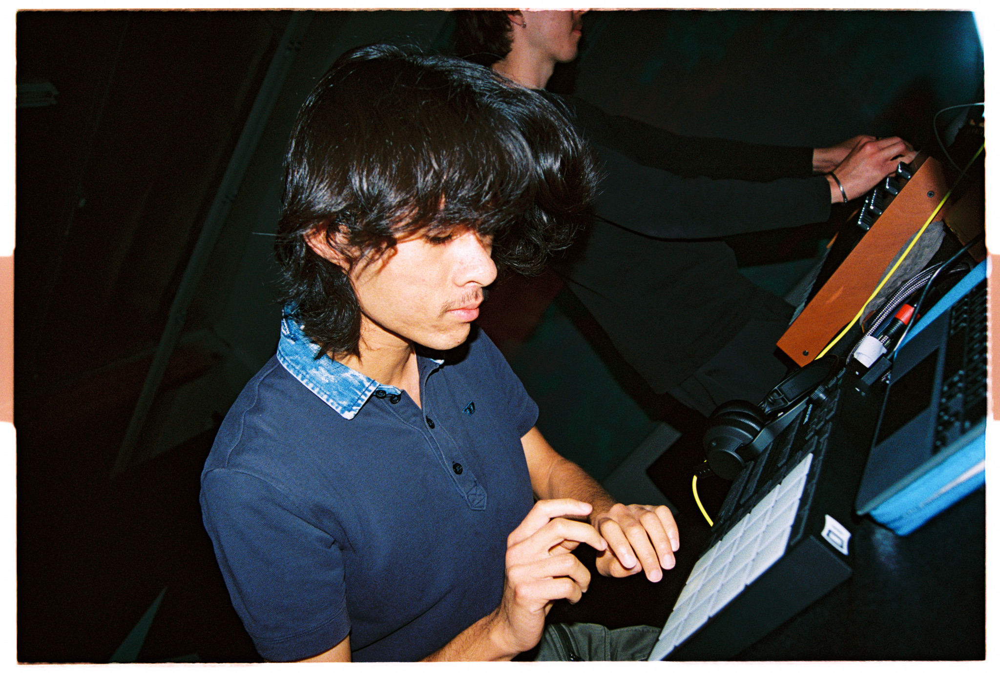

TARO ARTHUR D’ARONVILLE IS A BRITISH-JAPANESE CREATIVE TECHNOLOGIST CURRENTLY BASED IN LOS ANGELES, PURSUING A DEGREE IN MEDIA ARTS + PRACTICE AT THE USC SCHOOL OF CINEMATIC ARTS. THE NEXUS OF TARO’S WORK LIES IN THE INTERSECTION BETWEEN IMMERSIVE FILMMAKING AND GENERATIVE AI CAPABILITIES IN MEDIA POST PRODUCTION. HIS INTERESTS INCLUDE ZEN BUDDHIST PHILOSOPHIES, ARTISTIC EDUCATION, AND CREATING AN EQUITABLE MUSIC BUSINESS LANDSCAPE.


